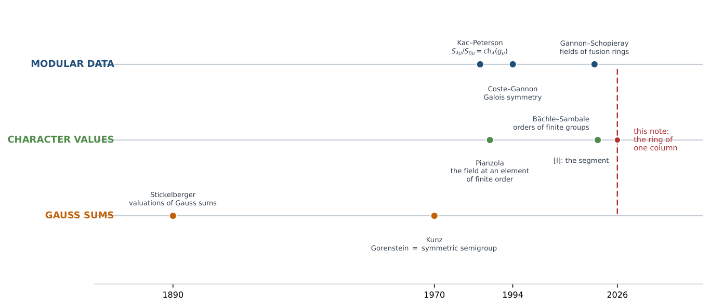
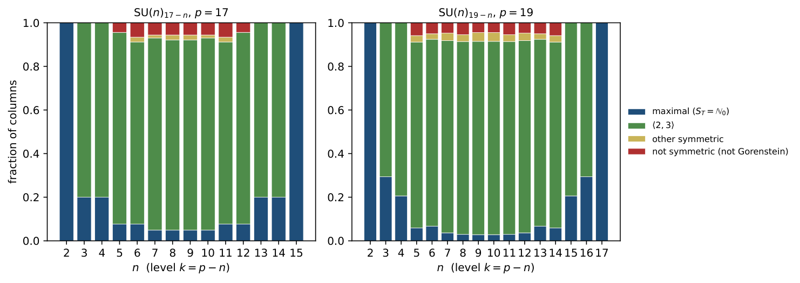

The order generated by a column of the SU(n)ₖ S-matrix is locally a numerical semigroup ring (Part I)
At a glance
What the paper contributes
A column μ of the modular S-matrix of SU(n)k, normalised by its first entry, generates a ring Aμ of character values. Its field was known (Gannon–Schopieray); the paper determines the ring when the height p = n + k is prime.
- The decomposition (Lemma 1, Proposition 2): Aμ = ℤ[ζm] ⊗ CT, a maximal cyclotomic factor fixed by the charge under the centre, and an order CT that depends only on the reduced spectrum T ⊂ 𝔽p; the index is a power of p.
- The exact semigroup (Theorem 3, Corollary 5): locally at p, CT is a monomial ring whose valuations form a numerical semigroup ST, written by Gauss sums and Stickelberger's theorem; the index is pφ(m)δ, δ the number of gaps.
- Read in 𝔽p (Theorem 4): when p > (n−1)(n−2), and for every p when n ≤ 12, ST is generated by e and the j with Mhj(T) ≠ 0.
- One semigroup, every property (Corollaries 6–8, Propositions 9–10): Gorenstein ⇔ ST symmetric (Kunz), exponent p when the conductor is small, the vacuum is maximal, level–rank keeps ST, the conformal weight sees M2.
- Counts and extremes (Propositions 11–12, §6): a closed count of the maximal columns, the largest defect (n−1)(n−2)/2 attained exactly by the trinomials Xn + aX + b, and the first non-Gorenstein column at prime height, SU(5)12.
🚀 Start here: Proposition 2: the ring of a column is Z[ζₘ] ⊗ C_T, and its index is a power of p.
Main results:
- Proposition 2: the ring of a column is Z[ζₘ] ⊗ C_T, and its index is a power of p
- Theorem 3: locally at p, C_T is the monomial ring of the numerical semigroup S_T, and δ(T) is its number of gaps
- Theorem 4: when p > (n−1)(n−2), or n ≤ 12, the semigroup is read in Fₚ from the nonzero power sums Mhⱼ(T)
- Corollary 6: a column ring is Gorenstein if and only if its semigroup is symmetric
🗺️ Map of the results (click a box to go to it)
Dependencies in the written proof: an arrow A → B means that this proof of B uses A. Every result rests on its written proof; the tags record what was checked besides, and each statement's “Evidence & scope” block says how far. The colour of a box is its strongest tag, in the order above; the tags in the box give the rest. Boxes with a thick border are the main results; click a box to read the statement.
📐 Setting (copied from the paper, §1–§3)
(Abstract) Fix a column \(\mu \) of the modular \(S\)-matrix of \({\mathrm{SU}}(n)_k\) and let \(A_\mu \) be the ring generated by the ratios \(S_{\lambda \mu }/S_{0\mu }\): the character values of \({\mathrm{SU}}(n)\) at the element of finite order that labels \(\mu \). (§1) For \({\mathrm{SU}}(n)\) at level \(k\) and integrable weights \(\lambda ,\mu \),
Throughout, \(p\) is an odd prime, \(n\ge 2\), \(k=p-n\ge 1\), \(\zeta _N=e^{2\pi i/N}\), and for a column \(\mu \) we write \({\mathcal{O}}_\mu \) for the integers of the field \(K_\mu \) of \(A_\mu \). (§2) Write \(\ell _i=\sum _{j\ge i}\mu _j+n-i\) (\(1\le i\le n\)), \(L=\sum _i\ell _i\), and fix integers \(u,v\) with \(up+vn=1\). The eigenvalues of \(g_\mu \) on \(\mathbb C^n\) are \(\zeta _{np}^{n\ell _i-L}\), and
The \(\ell _i\) are distinct in \([0,p-1]\), so \(T=T_\mu =\{ t_1,\dots ,t_n\} \subset {\mathbb {F}}_p\) has \(n\) elements, and \(\sum _it_i=L(1-nv)=Lup\equiv 0\): the spectrum is centred. The scalar \(\eta _\mu \) is a root of unity of order \(m=m_\mu \) dividing \(n\). (proof of Lemma 1) With \(y_t=\zeta _p^t\), …Let \(C_T={\mathbb {Z}}[e_1(y_T),\dots ,e_{n-1}(y_T)]\subset {\mathbb {Z}}[\zeta _p]\), \(H_T=\{ a\in {\mathbb {F}}_p^\times :aT=T\} \) of order \(h\), and \(E_T={\mathbb {Q}}(\zeta _p)^{H_T}\), of degree \(e=(p-1)/h\). From now on \(\delta (T)=v_p[{\mathcal{O}}_{E_T}:C_T]\). (§3) Let \(\omega :{\mathbb {F}}_p^\times \to {\mathbb {Z}}_p^\times \) be the Teichmüller character, and put
Since \(\omega (t)\equiv t\), \(b_j=0\) exactly when the power sum \(M_{hj}(T)=\sum _{t\in T}t^{hj}\) is nonzero in \({\mathbb {F}}_p\).
Abstract.
Fix a column \(\mu \) of the modular \(S\)-matrix of \({\mathrm{SU}}(n)_k\) and let \(A_\mu \) be the ring generated by the ratios \(S_{\lambda \mu }/S_{0\mu }\): the character values of \({\mathrm{SU}}(n)\) at the element of finite order that labels \(\mu \). Its field is known; we determine the ring when the height \(p=n+k\) is prime. \(A_\mu \) is the tensor product of the integers of a cyclotomic field \({\mathbb {Q}}(\zeta _m)\), fixed by the charge of \(\mu \) under the centre, with an order \(C_T\) that depends only on the reduced spectrum \(T\subset {\mathbb {F}}_p\) of the element. Locally at \(p\), \(C_T\) is a monomial ring: its valuations form a numerical semigroup \(S_T\), written down exactly by Gauss sums and Stickelberger’s theorem. Every property of the order at \(p\) is then a property of \(S_T\). The index \([{\mathcal{O}}_\mu :A_\mu ]\) is \(p^{\varphi (m)\delta }\) with \(\delta \) the number of gaps of \(S_T\); \(A_\mu \) is Gorenstein if and only if \(S_T\) is symmetric; \(p\, {\mathcal{O}}_\mu \subseteq A_\mu \) when the conductor is at most the ramification index; level–rank duality replaces \(T\) by its negated complement and keeps \(S_T\); the vacuum column has \(S_T={\mathbb {N}}_0\) and is maximal. When \(p{\gt}(n-1)(n-2)\), and for every \(p\) when \(n\le 12\), \(S_T\) is read in \({\mathbb {F}}_p\): it is generated by the ramification index \(e=(p-1)/h\) and the \(j{\lt}e\) with \(M_{hj}(T)\ne 0\), where \(M_r(T)=\sum _{t\in T}t^r\) and \(h\) is the order of the multiplicative stabiliser of \(T\). At prime height, the first non-Gorenstein column, by \(n\) and then by level, is at \({\mathrm{SU}}(5)_{12}\).
Keywords: modular \(S\)-matrix; \({\mathrm{SU}}(n)_k\); orders generated by character values; numerical semigroups; Gauss sums; Stickelberger’s theorem; Gorenstein orders; level–rank duality; quantum dimensions; anyons.
1 Columns since 1984, and a question of rings
In 1984 Kac and Peterson found that the modular transformation of the characters of an affine Lie algebra is a matrix of character values of the compact Lie group [ 12 ] , [ 11 , Thm. 13.8 ] : for \({\mathrm{SU}}(n)\) at level \(k\) and integrable weights \(\lambda ,\mu \),
Four years later Verlinde read the fusion rules of the conformal field theory off the same matrix [ 2 ] , and a column of \(S\), normalised by its first entry, became the list of eigenvalues of the fusion matrices; the column \(\mu =0\) lists the quantum dimensions of the anyons of \({\mathrm{SU}}(n)_k\). From there the arithmetic of the numbers went one way: Coste and Gannon showed that the Galois group permutes the columns [ 8 ] , and Gannon and Schopieray determined, for every \(\mathfrak g\) and \(k\), the field generated by each quantum dimension and the field generated by all the Verlinde eigenvalues together [ 9 , Props. 4.3 and 4.7 ] . That is the first lane of Figure 1, and it ends at a field.
The second lane asks the same question of a compact group, one element at a time. Pianzola studied the evaluation of the representation ring at an element of finite order and determined its field [ 14 , Prop. 10 ] ; for finite groups, Bächle and Sambale asked for the order generated by the character values, not only its field, proved that the primes dividing its index divide the order of the group and, for nilpotent groups, bounded the exponent of that index [ 7 , Thms. A and B ] , conjecturing the bound for every finite group [ 7 , Conj. C ] . The preceding note [ 10 ] computes that order for \({\mathrm{SU}}(n)\), \({\mathrm{Sp}}(2m)\) and \({\mathrm{GL}}(n)\) at the principal element: the column \(\mu =0\). There the spectrum is a segment of exponents, and the answer is a law of layers read off the segment.
What ring does an arbitrary column generate?
For \(\mu \ne 0\) the spectrum is no longer a segment, and the answer comes from older arithmetic. Stickelberger’s valuations of Gauss sums [ 1 ] turn the ring of a column, locally at a prime height \(p=n+k\), into a monomial ring, whose exponents form a numerical semigroup; and Kunz showed that such a semigroup already knows whether its ring is Gorenstein [ 13 , Thm., p. 749 ] . One semigroup, read off the power sums of the spectrum, then carries all the arithmetic of the column: the index, the Gorenstein property, the exponent, the behaviour under level–rank duality, and the maximality of the vacuum.
🖼️ Figure 1

Three lanes, and this note at the crossing. Modular data: from Kac–Peterson’s formula to the fields of Gannon and Schopieray; the question ends at a field. Character values: the field at an element of finite order (Pianzola), the order for finite groups (Bächle–Sambale), the order at the principal element ( [ 10 ] ). Gauss sums and semigroups: Stickelberger’s valuations make the ring monomial, and Kunz reads the Gorenstein property off its semigroup.
Throughout, \(p\) is an odd prime, \(n\ge 2\), \(k=p-n\ge 1\), \(\zeta _N=e^{2\pi i/N}\), and for a column \(\mu \) we write \({\mathcal{O}}_\mu \) for the integers of the field \(K_\mu \) of \(A_\mu \).
The table answers the question, one row per section.
|
question |
answer |
|
What does a column generate? (§2) |
the integers of \({\mathbb {Q}}(\zeta _m)\), fixed by the charge under the centre, tensored with the order \(C_T\) of the spectrum; the defect is a power of \(p\). Lemma 1, Proposition 2 |
|
What is that order at \(p\)? (§3) |
a monomial ring with one numerical semigroup \(S_T\), written by Gauss sums; the index is its number of gaps. Theorem 3 |
|
Can the semigroup be read in \({\mathbb {F}}_p\)? (§3) |
yes, from the nonzero power sums of the spectrum, when \(p{\gt}(n-1)(n-2)\) and for every \(p\) when \(n\le 12\). Theorem 4 |
|
What else does the semigroup say? (§4) |
Gorenstein \(=\) symmetric, exponent \(p\) when the conductor is small, the vacuum is maximal, level–rank keeps the semigroup; the conformal weight sees \(M_2\) and no more. Corollaries 6–8, Propositions 9 and 10 |
|
How many columns are maximal? (§5) |
a closed count over the stabilisers: a maximal column needs a multiplicative symmetry of its spectrum, which becomes rare. Proposition 11 |
|
Where does Gorenstein first fail? (§6) |
at prime height, for \(n=5\): at \({\mathrm{SU}}(5)_{12}\), \(\mu =(0,0,2,1)\), semigroup \(\langle 3,4,5\rangle \). Table 1 |
Colour: green = yes / holds.
2 The spectrum and the centre
What part of the column is new, and what part does the centre of \({\mathrm{SU}}(n)\) contribute?
Write \(\ell _i=\sum _{j\ge i}\mu _j+n-i\) (\(1\le i\le n\)), \(L=\sum _i\ell _i\), and fix integers \(u,v\) with \(up+vn=1\). The eigenvalues of \(g_\mu \) on \(\mathbb C^n\) are \(\zeta _{np}^{n\ell _i-L}\), and since \(1/(np)=u/n+v/p\),
The \(\ell _i\) are distinct in \([0,p-1]\), so \(T=T_\mu =\{ t_1,\dots ,t_n\} \subset {\mathbb {F}}_p\) has \(n\) elements, and \(\sum _it_i=L(1-nv)=Lup\equiv 0\): the spectrum is centred. The scalar \(\eta _\mu \) is a root of unity of order \(m=m_\mu \) dividing \(n\), determined by the class of \(L\) modulo \(n\); as \(L\equiv c(\mu )+n(n-1)/2\pmod n\), with \(c(\mu )=\sum _ii\mu _i\), it is fixed by the charge of \(\mu \) under the centre \({\mathbb {Z}}/n\). (With the opposite sign in \(g_\mu \), \(T\) becomes \(-T\); nothing below changes.)
↳ Used in: Proposition 2
The complete symmetric function \(h_{p-n}\) is the character of \(\operatorname {Sym}^{p-n}\mathbb C^n\). With \(y_t=\zeta _p^t\), \(\prod _{t\in T}(1-y_tX)\prod _{t\notin T}(1-y_tX)=1-X^p\), so \(\sum _jh_j(y_T)X^j=\prod _{t\notin T}(1-y_tX)/(1-X^p)\) and \(h_{p-n}(y_T)\) is the top coefficient of the numerator, \((-1)^{p-n}\prod _{t\notin T}y_t=(-1)^{n-1}\), because \(\sum _{t\in {\mathbb {F}}_p}t=0=\sum _{t\in T}t\). By homogeneity \(\operatorname {ch}_{h_{p-n}}(g_\mu )=(-1)^{n-1}\eta _\mu ^{\, p-n}=\pm \eta _\mu ^{\, p}\), and \(p\) is invertible modulo the order of \(\eta _\mu \).
Let \(C_T={\mathbb {Z}}[e_1(y_T),\dots ,e_{n-1}(y_T)]\subset {\mathbb {Z}}[\zeta _p]\), \(H_T=\{ a\in {\mathbb {F}}_p^\times :aT=T\} \) of order \(h\), and \(E_T={\mathbb {Q}}(\zeta _p)^{H_T}\), of degree \(e=(p-1)/h\). An element \(\sigma _a\) of \(\operatorname {Gal}({\mathbb {Q}}(\zeta _p)/{\mathbb {Q}})\) fixes every \(e_j(y_T)\) exactly when \(aT=T\), so \(E_T\) is the field of \(C_T\).
\(A_\mu ={\mathbb {Z}}[\zeta _m]\otimes C_T\), \(K_\mu ={\mathbb {Q}}(\zeta _m)E_T\), and
a power of \(p\).
↳ Used in: Corollary 5
The fundamental characters generate the representation ring, so \(A_\mu ={\mathbb {Z}}[e_j(g_\mu )]\) with \(e_j(g_\mu )=\eta _\mu ^je_j(y_T)\); with Lemma 1, \(A_\mu ={\mathbb {Z}}[\eta _\mu ]\cdot C_T\). As \(\gcd (m,p)=1\), \({\mathbb {Q}}(\zeta _m)\) and \(E_T\) are linearly disjoint with coprime discriminants, so \({\mathcal{O}}_{K_\mu }={\mathbb {Z}}[\zeta _m]\otimes {\mathcal{O}}_{E_T}\) and \({\mathbb {Z}}[\zeta _m]\cdot C_T\cong {\mathbb {Z}}[\zeta _m]\otimes C_T\); the index is \([{\mathcal{O}}_{E_T}:C_T]^{\varphi (m)}\). It remains to see that \(C_T\) is maximal at every prime \(r\ne p\). The prime \(r\) is unramified in \(E_T\), so \({\mathcal{O}}_{E_T}/r\) is a finite étale \({\mathbb {F}}_r\)-algebra, whose geometric points are the \(e\) embeddings \(\sigma _a\), \(a\in {\mathbb {F}}_p^\times /H_T\), followed by \(\zeta _p\mapsto \xi \), a primitive \(p\)-th root of unity in \(\overline{{\mathbb {F}}}_r\). The image of \(C_T\) separates them: \(e_j(y_T)\) goes to the coefficients of \(\prod _{t\in T}(X-\xi ^{at})\), and \(\{ \xi ^{at}\} =\{ \xi ^{a't}\} \) forces \(aT=a'T\). A subalgebra of a finite étale algebra that separates its geometric points is everything, so \(C_T+r{\mathcal{O}}_{E_T}={\mathcal{O}}_{E_T}\), and Nakayama gives \(C_T\otimes {\mathbb {Z}}_r={\mathcal{O}}_{E_T}\otimes {\mathbb {Z}}_r\).
💡 In plain words (commentary, not part of the paper)
1. The ring \(A_\mu \) of one column splits into two independent factors. The centre of \({\mathrm{SU}}(n)\) contributes the integers \({\mathbb {Z}}[\zeta _m]\) of a cyclotomic field, fixed by the charge of \(\mu \); that factor is already maximal and only multiplies the index. Everything else lives in the order \(C_T\) generated by the elementary symmetric functions of \(\zeta _p^t\), \(t\in T\), which depends only on the reduced spectrum \(T\subset {\mathbb {F}}_p\). 2. Why: the fundamental characters at \(g_\mu \) are \(\eta _\mu ^je_j(y_T)\), and Lemma 1 puts \(\eta _\mu \) in the ring, so \(A_\mu ={\mathbb {Z}}[\eta _\mu ]\cdot C_T\); the two fields are linearly disjoint with coprime discriminants, which turns the product into a tensor product and the index into \([{\mathcal{O}}_{E_T}:C_T]^{\varphi (m)}\). 3. The index is a power of \(p\): at a prime \(r\ne p\) the image of \(C_T\) separates the geometric points of the étale algebra \({\mathcal{O}}_{E_T}/r\), so it is all of it, and Nakayama gives maximality at \(r\). From here on the paper studies only \(\delta (T)=v_p[{\mathcal{O}}_{E_T}:C_T]\).
🛡️ Evidence & scope
Program: the index [O_μ : A_μ] = p^φ(m)δ as a lattice index in all 662 columns of SU(3)_4, SU(4)_3, SU(3)_8, SU(8)_3, SU(5)_6, SU(6)_5. nivel_rango.py
So the column contributes two things: a cyclotomic field fixed by the centre, which is maximal and only multiplies, and the order \(C_T\) of the spectrum, where everything happens. From now on \(\delta (T)=v_p[{\mathcal{O}}_{E_T}:C_T]\).
3 The semigroup of a spectrum
Where does \(C_T\) fall short of the integers, and by how much?
Let \(\omega :{\mathbb {F}}_p^\times \to {\mathbb {Z}}_p^\times \) be the Teichmüller character, and put
Since \(\omega (t)\equiv t\), \(b_j=0\) exactly when the power sum \(M_{hj}(T)=\sum _{t\in T}t^{hj}\) is nonzero in \({\mathbb {F}}_p\).
Let \(R=C_T\otimes {\mathbb {Z}}_p\) and let \(\theta =g_1^{\, h}\), with \(g_1\) the Gauss sum below, a uniformizer of \(E_T\otimes {\mathbb {Q}}_p\) on which the Galois group acts by a character. Then \(R\) is the monomial ring
the valuations of its nonzero elements form the numerical semigroup \(S_T\), and \(\delta (T)=\# ({\mathbb {N}}_0\setminus S_T)\), the number of gaps.
🆕 Classical and new: built from Stickelberger's valuations of Gauss sums [Sti90; Rob01, Cor. 1] and Selmer's formula for the genus [Sel77].
↳ Used in: Theorem 4, Corollary 5, Corollary 6, Corollary 8, Proposition 9, Proposition 10, Proposition 11, Proposition 12
Power sums. By Newton’s identities \(e_j\) is a polynomial in \(p_1,\dots ,p_j\) with denominators dividing \(j!\), invertible in \({\mathbb {Z}}_p\) as \(j\le n{\lt}p\); and every power sum is an integral polynomial in the \(e_j\). Hence \(R={\mathbb {Z}}_p[p_r(y_T):r\ge 1]={\mathbb {Z}}_p[\sigma _a(\alpha ):a\in {\mathbb {F}}_p^\times ]\) with \(\alpha =\sum _{t\in T}\zeta _p^t\).
Eigenvectors. \(R\) is stable under \(\operatorname {Gal}({\mathbb {Q}}_p(\zeta _p)/{\mathbb {Q}}_p)\cong {\mathbb {F}}_p^\times \), and \(p-1\) is a unit, so the projectors \(P_r=\frac1{p-1}\sum _a\omega (a)^{-r}\sigma _a\) act on \(R\), and \(R\) is generated as a \({\mathbb {Z}}_p\)-algebra by the \(P_r\alpha \). Substituting \(b=at\),
and \(B'_r=0\) unless \(h\mid r\), because \(T\) is \(H_T\)-stable. By Stickelberger’s theorem \(v_\pi (g_r)=r\) for \(0\le r{\lt}p-1\), with \(\pi =\zeta _p-1\) [ 15 , Cor. 1, p. 168 ] .
The uniformizer. Put \(\theta =g_1^{\, h}\). As \(\sigma _a g_r=\omega (a)^rg_r\), \(\theta \) is fixed by \(H_T\), lies in \(E_T\), and has \(\pi \)-valuation \(h\): it is a uniformizer of \(E_T\otimes {\mathbb {Q}}_p\), which is totally ramified of degree \(e\). For the same reason \(g_{hj}/\theta ^{\, j}\) and \(\theta ^{\, e}/p\) are fixed by all of \(\operatorname {Gal}\), lie in \({\mathbb {Q}}_p\), and have valuation \(0\): they are units of \({\mathbb {Z}}_p\). So \(P_{hj}\alpha =u_j\, p^{b_j}\theta ^{\, j}=u'_j\, \theta ^{\, j+eb_j}\) with \(u_j,u'_j\in {\mathbb {Z}}_p^\times \), and \(p\) is a unit times \(\theta ^e\).
Monomial. \(R\) is generated over \({\mathbb {Z}}_p\) by unit multiples of \(\theta ^s\), \(s\) in the generators of \(S_T\), so \(R=\sum _{s\in S_T}{\mathbb {Z}}_p\theta ^s\) inside \({\mathcal{O}}_{E_T}\otimes {\mathbb {Z}}_p={\mathbb {Z}}_p[\theta ]\), whose \({\mathbb {Z}}_p\)-basis is \(1,\theta ,\dots ,\theta ^{e-1}\). For each residue \(i\) modulo \(e\) let \(w_i=i+ec_i\) be the least element of \(S_T\) in that class (the Apéry set of \(S_T\) with respect to \(e\)). Then \(R=\bigoplus _{i{\lt}e}{\mathbb {Z}}_p\, p^{c_i}\theta ^i\) up to units, the valuations of \(R\setminus 0\) are exactly \(S_T\), and \(v_p[{\mathbb {Z}}_p[\theta ]:R]=\sum _ic_i\), which is the number of gaps of \(S_T\) by Selmer’s formula [ 6 ] .
💡 In plain words (commentary, not part of the paper)
1. Locally at \(p\), the order of a spectrum is as simple as it could be: it is spanned by the powers \(\theta ^s\) of one uniformizer \(\theta \), for \(s\) in a numerical semigroup \(S_T\). The semigroup is generated by the ramification index \(e\) and by the numbers \(j+e\, b_j\), where \(b_j\) is the \(p\)-adic valuation of the power sum \(B_j(T)\) of Teichmüller lifts. Its number of gaps is the defect \(\delta (T)\). 2. Why: by Newton’s identities the ring is generated by the Galois conjugates of \(\alpha =\sum _{t\in T}\zeta _p^t\); the Galois eigenprojectors have coefficients in \({\mathbb {Z}}_p\) and send \(\alpha \) to a multiple \(B'_r g_r\) of a Gauss sum, and Stickelberger’s theorem gives \(v_\pi (g_r)=r\). With \(\theta =g_1^h\) each eigencomponent is a unit times \(\theta ^{\, j+eb_j}\), so the ring is monomial; the least elements of \(S_T\) in each class modulo \(e\) (the Apéry set) give the index, which by Selmer’s formula is the number of gaps. 3. The paper notes that the splitting into eigenlines is automatic (a Galois-stable ring in a tamely ramified extension); what the theorem adds is which powers of \(p\) multiply them.
🛡️ Evidence & scope
Program: δ(T) as a Hermite-normal-form index equals g(S_T) in every centred spectrum with 3 ≤ n ≤ 6, 5 ≤ p ≤ 31 (2414 orbits), and for n = 7, 8, 9 below the bound (11 331 orbits). censo.py
The generators need \(p\)-adic valuations. Can the semigroup be read without leaving \({\mathbb {F}}_p\)?
That \(R\) splits into eigenlines is automatic: it is Galois-stable in a tamely ramified extension, and the projectors have coefficients in \({\mathbb {Z}}_p\). What the theorem adds is which powers of \(p\) multiply them, from Stickelberger’s valuations. The generators with \(b_j=0\) are read in \({\mathbb {F}}_p\) alone. Collecting them gives the semigroup of moments,
so always \(\delta (T)\le g(\Gamma _T)\), the genus of \(\Gamma _T\). The question is when the \(p\)-adic generators \(j+eb_j\) with \(b_j\ge 1\) add nothing.
If \(p{\gt}(n-1)(n-2)\) (equivalently \(p\ge (n-1)(n-2)\), as \(p\) is odd), then \(S_T=\Gamma _T\) and
The same holds for every \(p\) when \(n\le 12\).
🆕 Classical and new: the conductor bound uses Schur's bound on the Frobenius number, as given by Brauer [Bra42].
↳ Used in: Corollary 7, Proposition 12
If the conductor \(c(\Gamma _T)\) is at most \(e+1\), every \(j+eb_j\) with \(b_j\ge 1\) is \(\ge e+1\ge c\) and already lies in \(\Gamma _T\). Let \(V=\{ t^h:t\in T\setminus 0\} \), a set of \(d\le n/h\) elements of the group \(\mu _e\subset {\mathbb {F}}_p^\times \) of \(h\)-th powers; each \(v\in V\) is hit \(h\) times, so \(M_{hj}(T)=h\, p_j(V)\). With \(A(Y)=\prod _{v\in V}(1-vY)\) and \(B(Y)=\prod _{v\in \mu _e\setminus V}(1-vY)\), \(A(Y)B(Y)=1-Y^e\). Newton’s identities \(p_j+a_1p_{j-1}+\dots +ja_j=0\), with \(j{\lt}e{\lt}p\) invertible, show by induction that the indices \(j{\lt}e\) with \(p_j(V)\ne 0\) and those with \(a_j\ne 0\) generate the same semigroup, and likewise for the coefficients of \(1/A=B/(1-Y^e)\), which are those of \(B\) below \(e\). So \(\Gamma _T\) is generated by \(e\) and a set \(G\) of integers at most \(D=\min (d,e-d)\): the support of \(A\) or that of \(B\), whichever has the smaller degree. The elements of \(G\) have no common factor \(g{\gt}1\): every exponent of \(A\) is below \(e\), hence a combination of \(G\) alone, so \(A\) would be a polynomial in \(Y^g\); its roots, and so \(V\), would be stable under \(\mu _g\), and as \(T\setminus 0\) is the full preimage of \(V\) under \(t\mapsto t^h\), \(T\) would be stable under \(\mu _{gh}\supsetneq H_T\). By Schur’s bound on the Frobenius number [ 4 ] , \(c(\Gamma _T)\le c(\langle G\rangle )\le (D-1)(D-2)\), which is \(0\) if \(D\le 2\); otherwise \(3\le D\le d\le n/h\) and \((D-1)(D-2)\le (n/h-1)(n/h-2)\le (n-1)(n-2)/h\le p/h\le e+1\) when \(p\ge (n-1)(n-2)\).
For \(n\le 12\), exchange \(A\) and \(B\) if necessary so that \(D=\deg A\le e/2\); then \(D\le n\le 12\), \(G=\operatorname {supp}A\setminus 0\), and \(D\in G\), the coefficient of \(Y^D\) being \(\pm \prod _vv\ne 0\). Moreover \(e\in \langle G\rangle \): every monomial of \(B=[A^{-1}]_{\le e-D}\) has its exponent in \(\langle G\rangle \), so if \(e\notin \langle G\rangle \) the coefficient of \(Y^e\) in \(AB\) would be \(0\), not \(-1\). Hence \(\Gamma _T=\langle G\rangle \), and since \(e\in \Gamma _T\) it suffices to show \(c(\Gamma _T)\le e\). Let \(\kappa \) be the multiplicity of \(\Gamma _T\). If \(\kappa =2\) or \(3\), a generator \(u\le D\) prime to \(\kappa \) gives \(c\le c(\langle \kappa ,u\rangle )\le 2(D-1){\lt}e\). If \(\Gamma _T=\langle a,b\rangle \) has two minimal generators, then \(ab\le e\): otherwise every degree up to \(e\) has a unique expression \(ia+jb\), the substitution \(Y^{ia+jb}\mapsto U^iV^j\) turns \(AB=1-Y^e\) into a factorisation of a binomial \(1-U^rV^s\), all of whose factors are polynomials in one monomial, while \(A\) contains both \(U\) and \(V\); so \(c=(a-1)(b-1){\lt}e\). In general the roots of the reciprocal \(F(X)=X^DA(1/X)\) are \(D\) elements of \(\mu _e\) with trivial stabiliser, and for \(r\in \mu _e\setminus 1\) the polynomial \(F(rX)-r^DF(X)\) is nonzero of degree at most \(D-\kappa \); counting the ordered pairs of roots with quotient \(r\) gives \(D(D-1)\le (e-1)(D-\kappa )\). Among the semigroups generated by integers at most \(12\) with multiplicity at least \(4\) and three or more minimal generators, only \(\langle 6,9,11\rangle \), \(\langle 6,10,11\rangle \), \(\langle 7,9,12\rangle \) and \(\langle 8,11,12\rangle \) are compatible with \(e\ge 2D\), this inequality and \(c(\Gamma _T){\gt}e\), in sixteen triples \((D,\Gamma _T,e)\). In each of them the truncation \(B=[A^{-1}]_{\le e-D}\) makes a coefficient of \(AB\) below degree \(e\) equal to a nonzero monomial in the leading coefficients of \(A\) — \(-2c_6c_9\), \(-2c_6c_{10}\), \(-c_9^2\), \(-2c_{11}c_{12}\) or \(3c_8^2c_{11}\) — which contradicts \(AB=1-Y^e\), since \(p{\gt}e\ge 23\).
💡 In plain words (commentary, not part of the paper)
1. The generators of Theorem 3 need \(p\)-adic valuations. This theorem says that, when \(p{\gt}(n-1)(n-2)\) and for every \(p\) when \(n\le 12\), they are not needed: the semigroup \(S_T\) is generated by \(e\) and the indices \(j{\lt}e\) for which the power sum \(M_{hj}(T)=\sum _{t\in T}t^{hj}\) is nonzero in \({\mathbb {F}}_p\). The defect of a column is then computed with arithmetic modulo \(p\) alone. 2. Why: the generators read in \({\mathbb {F}}_p\) give a semigroup \(\Gamma _T\subseteq S_T\), and the extra generators \(j+eb_j\) with \(b_j\ge 1\) are at least \(e+1\), so they add nothing once the conductor of \(\Gamma _T\) is at most \(e+1\). Newton’s identities show that \(\Gamma _T\) is generated by \(e\) and the support of a polynomial of degree \(D\le n/h\); Schur’s bound on the Frobenius number (as given by Brauer) bounds the conductor by \((D-1)(D-2)\), which is at most \(e+1\) when \(p\ge (n-1)(n-2)\). 3. For \(n\le 12\) and smaller \(p\) the proof is a finite case analysis: after general arguments only sixteen triples \((D,\Gamma _T,e)\) remain, and in each a coefficient of \(AB=1-Y^e\) below degree \(e\) is a nonzero monomial, a contradiction; the script momentos_D12.py re-enumerates them. Whether \(c(\Gamma _T)\le e\) always holds is left open in §7.
🛡️ Evidence & scope
Program: the sixteen residual triples (D, Γ_T, e) of the case n ≤ 12, re-enumerated, and their obstructing coefficients computed symbolically. momentos_D12.py
Program: S_T = Γ_T in every orbit of the census (2414 + 11 331 orbits). censo.py
Measured: \(\delta (T)\) as an index, by Hermite normal form over \({\mathbb {Z}}\), for every centred spectrum with \(3\le n\le \min (6,p-2)\) and \(5\le p\le 31\): \(2414\) orbits under \({\mathbb {F}}_p^\times \), and in all of them \(\delta =g(\Gamma _T)=g(S_T)\), with \(e\) among the generators. Below the bound, \(n=7,8,9\) with \(p\le 29\), \(29\), \(23\): \(11\, 331\) orbits, \(\delta =g(\Gamma _T)=g(S_T)\) with no exception (censo.py). The sixteen residual triples of the proof re-enumerated, and their coefficients computed, symbolically (momentos_D12.py).
4 One semigroup, every property
The index is the number of gaps. What else about the column does the semigroup know?
\({ \boxed {\displaystyle [{\mathcal{O}}_\mu :A_\mu ]=p^{\, \varphi (m_\mu )\, \# ({\mathbb {N}}_0\setminus S_{T_\mu })}.}}\)
↳ Not used by another result of the paper.
🛡️ Evidence & scope
Program: checked as an index of integer lattices in 662 columns. nivel_rango.py
\(A_\mu \) is Gorenstein if and only if \(S_{T_\mu }\) is symmetric.
🆕 Classical and new: Kunz's theorem on the value semigroup of a one-dimensional Gorenstein ring [Kun70].
↳ Not used by another result of the paper.
Away from \(p\) the order is maximal. At \(p\), \(A_\mu \otimes {\mathbb {Z}}_p\) is a product over the primes of the unramified \({\mathbb {Z}}[\zeta _m]\otimes {\mathbb {Z}}_p\) of copies of \(R\otimes W\), \(W\) unramified; each is a complete local domain with residue field of the form \({\mathbb {F}}_{p^f}\), equal to that of its normalisation, and value semigroup \(S_T\); Kunz’s theorem [ 13 , Thm., p. 749 ] says such a ring is Gorenstein exactly when its value semigroup is symmetric.
💡 In plain words (commentary, not part of the paper)
1. Whether the ring of a column is Gorenstein is decided by its semigroup alone: exactly when \(S_T\) is symmetric, that is, when \(s\mapsto c-1-s\) exchanges its elements and its gaps below the conductor \(c\). 2. Why: away from \(p\) the order is maximal (Proposition 2). At \(p\) it is a product of complete local domains, each with the residue field of its normalisation and value semigroup \(S_T\) (Theorem 3), and Kunz’s theorem says that such a ring is Gorenstein exactly when its value semigroup is symmetric. 3. The paper locates the first failure at prime height in §6: \({\mathrm{SU}}(5)_{12}\), \(\mu =(0,0,2,1)\), with \(S_T=\langle 3,4,5\rangle \), gaps \(\{ 1,2\} \), not symmetric; the script primera_no_gorenstein.py checks the indices \(17^2\) and \(17\) as lattice indices.
🛡️ Evidence & scope
Program: the first non-Gorenstein column at prime height, SU(5)_12, μ = (0,0,2,1): [O_μ : A_μ] = 17² and [A_μ : f] = 17 as lattice indices, with the control μ = 0. primera_no_gorenstein.py
If \(c(S_T)\le e\), then \(p\, {\mathcal{O}}_\mu \subseteq A_\mu \) and \({\mathcal{O}}_\mu /A_\mu \) is elementary abelian. This holds whenever \(p{\gt}(n-1)(n-2)\).
↳ Not used by another result of the paper.
\(p\, {\mathbb {Z}}_p[\theta ]=\theta ^e{\mathbb {Z}}_p[\theta ]\) lies in the monomial ring \(R\) exactly when every integer \(\ge e\) is in \(S_T\). For the second sentence, the proof of Theorem 4 gives \(S_T=\Gamma _T\) and \(c\le (n-1)(n-2)/h\le (p-1)/h=e\).
🛡️ Evidence & scope
Program: c(S_T) ≤ e and p·O_E_T ⊆ C_T on the lattice, in the 2414 orbits of the census and in the 2644 with 3 ≤ n ≤ 8, p ≤ 23. exponente.py
The column \(\mu =0\) is maximal: \(A_0={\mathcal{O}}_0\) for every \({\mathrm{SU}}(n)_k\) with \(n+k\) prime.
🆕 Classical and new: agrees with the preceding note [I], where at prime height the column μ = 0 lies outside every family of non-maximal segments.
↳ Not used by another result of the paper.
For \(\mu =0\), \(\ell _i=n-i\) and \(T\) is a centred arithmetic progression, \(-T=T\), so \(h\ge 2\); for \(k\ge 2\) its second moment is \(M_2=n(n^2-1)/12\ne 0\) in \({\mathbb {F}}_p\), since \(2\le n\le p-2\). Then \(1\in \Gamma _T\) and \(S_T={\mathbb {N}}_0\); here \(h=2\) exactly, since \(M_2\ne 0\) and \(M_r=0\) unless \(h\mid r\). For \(k=1\), \(T\) is \({\mathbb {F}}_p\) minus a point, \(C_T={\mathbb {Z}}\).
This agrees with [ 10 ] , where at prime height the column \(\mu =0\) is outside every family of non-maximal segments; here it comes out of one nonzero moment.
Under level–rank duality \({\mathrm{SU}}(n)_k\leftrightarrow {\mathrm{SU}}(k)_n\), the spectrum of the transposed column is \(T'=-({\mathbb {F}}_p\setminus T)\), and \(C_{T'}=\sigma _{-1}(C_T)\): the semigroup, the index \(\delta \), the conductor and the Gorenstein property are preserved. Only the central factor \(\varphi (m)\) may change.
↳ Not used by another result of the paper.
For a partition in an \(n\times k\) box, the sets \(\{ \lambda _i+n-i\} \) and \(\{ n-1+j-\lambda '_j\} \) are complementary in \(\{ 0,\dots ,n+k-1\} \) [ 5 , I.(1.7) ] ; reducing modulo \(p=n+k\) and centring gives \(T'=-({\mathbb {F}}_p\setminus T)\). Next, \(\prod _{t\in T}(1-y_tX)\cdot \prod _{t\notin T}(1-y_tX)=1-X^p\), so the elementary symmetric functions of \(y_{{\mathbb {F}}_p\setminus T}\) are the coefficients of a power series with integral coefficients in those of \(y_T\), and conversely: \(C_{{\mathbb {F}}_p\setminus T}=C_T\). Finally \(\sigma _{-1}\), complex conjugation, carries \(C_{{\mathbb {F}}_p\setminus T}\) to \(C_{T'}\), and \(\sigma _{-1}\theta =\omega (-1)^h\theta =\pm \theta \), so it preserves the monomial structure and \(S_T\).
🛡️ Evidence & scope
Program: three level-rank pairs, every column, classes (h, gaps) in the proportion n/k. nivel_rango.py
Measured: Level–rank, with the index of every column computed as an index of integer lattices: \({\mathrm{SU}}(3)_4\leftrightarrow {\mathrm{SU}}(4)_3\), \({\mathrm{SU}}(3)_8\leftrightarrow {\mathrm{SU}}(8)_3\) and \({\mathrm{SU}}(5)_6\leftrightarrow {\mathrm{SU}}(6)_5\), the classes \((h,\text{gaps})\) in the proportion \(n/k\), and \([{\mathcal{O}}_\mu :A_\mu ]=p^{\varphi (m)\delta }\) in all \(662\) columns (nivel_rango.py). The exponent: \(c(S_T)\le e\), and \(p\, {\mathcal{O}}_{E_T}\subseteq C_T\) on the lattice, in the \(2414\) orbits of the census and in the \(2644\) with \(3\le n\le 8\), \(p\le 23\) (the two ranges overlap), with \(c/e\le 5/16\) (exponente.py).
The semigroup is a property of the column; the modular data of the column are its conformal weight, its charge under the centre and its Galois orbit. The first of these sees exactly one moment.
Let \(\Delta _\mu =\bigl(|\mu +\rho |^2-|\rho |^2\bigr)/2p\) be the conformal weight of \(\mu \), with roots of square length \(2\), so that \(|\rho |^2=n(n^2-1)/12\) and \(e^{2\pi i\Delta _\mu }\) is the eigenvalue of the modular matrix \(\mathcal T\) at \(\mu \) up to the central charge [ 11 , Thm. 13.8 ] . Then
so \(M_2(T_\mu )=0\) if and only if \(p\) does not divide the order of the root of unity \(e^{2\pi i\Delta _\mu }e^{\pi i|\rho |^2/p}=e^{\pi i|\mu +\rho |^2/p}\). If moreover \(H_T\) is trivial, then \(\delta (T)=1\) if and only if \(M_2(T)M_3(T)\neq 0\); so the index of the column is \(p^{\varphi (m)}\) exactly when both moments are nonzero, and the conformal weight decides the first of the two.
Lean · ours, in partshow
added to the Lean repository after publication (21-oct-2026, written for Part II, Corollary 3): the semigroup half of the second sentence, from the generating rule with the moments abstracted to a predicate (e ≥ 4, M₁ = 0): δ ≥ 2 ↔ M₂M₃ = 0; not the congruence M₂ ≡ |μ+ρ|², nor Theorem 3 itself
✅ Checked when this page was built: GapBound.lean compiles with Lean 4.35.0, no errors, no sorry. Axioms — two_le_genus_iff: propext, Classical.choice, Quot.sound.
Reproduce: Lean 4.35.0, Mathlib f0b4c8150aa0; in that Lean project, lake env lean GapBound.lean (SHA-256 of the compiled file: f7f979544891ccc9…; a source page on this site may show it with comments edited, under its own hash).
Trust base: 🔒 kernel only — only part of the statement is formal (see the box). Lean: 1 result, standard axioms only
Proof: in this note·Covers: not formalized·Cite: Lemma 1, p. 3, doi:10.5281/zenodo.22848530
↳ Not used by another result of the paper.
In the coordinates of §2, \(\mu +\rho \) is \((\ell _1,\dots ,\ell _n)\) modulo \((1,\dots ,1)\), so \(|\mu +\rho |^2=\sum _i(\ell _i-L/n)^2=\sum _i\ell _i^2-L^2/n\). With \(t_i=\ell _i-vL\) and \(vn\equiv 1\), \(\sum _it_i^2\equiv \sum _i\ell _i^2-2vL^2+nv^2L^2\equiv \sum _i\ell _i^2-L^2/n\). The root of unity is \(e^{2\pi iQ/2np}\) with \(Q=n|\mu +\rho |^2\in {\mathbb {Z}}\), and as \(p\nmid 2n\) its order is prime to \(p\) exactly when \(p\mid Q\). For the second sentence, \(h=1\) gives \(e=p-1\ge 4\). The only semigroup of genus one is \(\langle 2,3\rangle \). By Theorem 3 an integer below \(e\) lies in \(S_T\) exactly when it is a sum of indices \(j{\lt}e\) with \(M_j\neq 0\); \(M_1=0\), so \(1\notin S_T\), and \(2\) and \(3\) lie in \(S_T\) exactly when \(M_2\) and \(M_3\) are nonzero, and then \(S_T\supseteq \langle 2,3\rangle \) has at most one gap.
🛡️ Evidence & scope
Program: the congruence M₂ ≡ |μ+ρ|² in all 1820, 4368 and 1540 columns of SU(5)_12, SU(6)_11, SU(4)_19; the genus-one criterion in every orbit with p ≤ 31, n ≤ 9. peso_conforme.py
The second moment is not enough. At \({\mathrm{SU}}(5)_{14}\), \(\mu =(5,0,4,2)\), \(M_2=1\) and \(M_3=0\): the semigroup is \(\langle 2,5\rangle \) and the index \(19^2\). Nor are the weight, the charge, the stabiliser and the degree of the field together; the Galois orbit does fix the semigroup, trivially, since \(S_{aT}=S_T\) for \(a\in {\mathbb {F}}_p^\times \):
Measured: At \({\mathrm{SU}}(6)_{11}\) the columns \(\mu =(0,0,0,0,1)\) and \(\nu =(0,2,0,0,5)\) have the same conformal weight modulo \(1\), \(35/204\), the same charge \(5\), trivial stabiliser and fields of the same degree \(32\), and semigroups \(\langle 2,3\rangle \) and \(\langle 2,5\rangle \), indices \(17^2\) and \(17^4\), also as indices of integer lattices. The congruence of Proposition 10 in all \(1820\), \(4368\) and \(1540\) columns of \({\mathrm{SU}}(5)_{12}\), \({\mathrm{SU}}(6)_{11}\) and \({\mathrm{SU}}(4)_{19}\); the genus-one criterion in every orbit with \(p\le 31\), \(n\le 9\), where \(18\) orbits with \(h\ge 2\) also have \(\delta =1\) (peso_conforme.py).
5 How many columns of each kind
The vacuum is maximal. How many other columns are?
Let \(2\le n\le p-2\), and for \(h\mid p-1\) let \(e=(p-1)/h\), \(G_e\subset {\mathbb {F}}_p^\times \) the subgroup of order \(e\), and \(Z_{p,e}(d)\) the number of \(d\)-subsets of \(G_e\) with sum \(0\). The number of columns of \({\mathrm{SU}}(n)_{p-n}\) with \(S_T={\mathbb {N}}_0\) is
↳ Not used by another result of the paper.
\(S_T={\mathbb {N}}_0\) exactly when \(1\in S_T\), and a generator \(j+eb_j\) equals \(1\) only for \(j=1\), \(b_1=0\), that is when \(M_h(T)\ne 0\). If \(h=1\) this fails, \(M_1=\sum T=0\). For \(h{\gt}1\), \(T\setminus 0\) is a union of \(d\) cosets of \(H_T\), so \(n=hd\) or \(hd+1\) according as \(0\notin T\) or \(0\in T\), and every such set is centred; and \(M_h=h\sum _{u\in U}u\) with \(U=\{ t^h\} \subset G_e\) of size \(d\). If \(\sum U\ne 0\) the stabiliser is exactly of order \(h\), since a larger one would kill \(M_h\). So the sets with \(S_T={\mathbb {N}}_0\) and stabiliser of order \(h\) are counted by \(\binom ed-Z_{p,e}(d)\), the families for different \(h\) are disjoint, and each centred spectrum stands for \(n\) columns.
🛡️ Evidence & scope
Program: the formula against enumeration: 30 of 30 pairs (p, n), p = 17, 19. maximales.py
The formula says why the blue bars of Figure 2 are short in the middle: a maximal column needs a multiplicative symmetry of its spectrum, and such spectra become rare as \(n\) and \(p-n\) grow together. The typical column instead has trivial stabiliser and \(M_2M_3\ne 0\), hence \(\Gamma _T=\langle 2,3\rangle \), and a non-symmetric semigroup needs at least \(M_2=0\).
Measured: The formula against the enumeration of Figure 2: \(30\) of \(30\) pairs \((p,n)\), \(p=17,19\) (maximales.py).
6 The first column that is not Gorenstein
Which semigroups actually occur, how often, and where does the Gorenstein property first fail?
Figure 2 shows, for \(p=17\) and \(p=19\) and every \(n\), the fraction of the columns of \({\mathrm{SU}}(n)_{p-n}\) with each kind of semigroup. Three things are visible at once. The maximal columns are a minority except at the ends; the typical column has semigroup \(\langle 2,3\rangle \) and index \(p^{\varphi (m)}\). The non-Gorenstein columns appear from \(n=5\) on. And the picture is symmetric under \(n\mapsto p-n\), as Proposition 9 requires: \({\mathrm{SU}}(n)_k\) and \({\mathrm{SU}}(k)_n\) have different numbers of columns, in the ratio \(n/k\), but the same proportions.
🖼️ Figure 2

The columns of \({\mathrm{SU}}(n)_{p-n}\) by the semigroup \(S_T\) of their spectrum, computed with the exact formula of Theorem 3; each centred spectrum stands for \(n\) columns. Maximal columns (blue) have \(A_\mu ={\mathcal{O}}_\mu \); \(\langle 2,3\rangle \) (green) has one gap; the other symmetric semigroups (gold) are Gorenstein with more gaps; the red ones are not Gorenstein. The bars for \(n\) and \(p-n\) agree, as level–rank duality demands.
For \(n\le 4\) every \(S_T\) is \({\mathbb {N}}_0\), \(\langle 2,3\rangle \) or \(\langle 3,4\rangle \), all symmetric. Indeed \(S_T=\Gamma _T\) there by Theorem 4, and in its proof \(G\subseteq \{ 1,\dots ,D\} \) with \(D\le d\le n/h\): if \(h\ge 2\) then \(D\le 2\) and \(\gcd (G)=1\) forces \(1\in G\), so \(S_T={\mathbb {N}}_0\); if \(h=1\) then \(M_1=\sum T=0\) keeps \(1\) out of \(G\), and a subset of \(\{ 2,3,4\} \) with no common factor generates \(\langle 2,3\rangle \) or \(\langle 3,4\rangle \). At prime height, the first non-symmetric semigroup, in the order of \(n\) and then of \(p\), is \(\langle 3,4,5\rangle \) (the generator \(e\) is redundant), with gaps \(\{ 1,2\} \), at \(n=5\), \(p=17\), \(T=\{ 1,2,3,13,15\} \): the moments \(M_1,\dots ,M_5\) are \((0,0,15,13,2)\) and \(h=1\). It is realised by \({\mathrm{SU}}(5)_{12}\), \(\mu =(0,0,2,1)\), where \(L\equiv 0\pmod5\), so \(m=1\) and
a local ring of conductor \(3\) and two gaps, not Gorenstein. Measured: As indices of integer lattices, \([{\mathcal{O}}_\mu :A_\mu ]=17^2\) and \([A_\mu :\mathfrak f]=17\) for the conductor \(\mathfrak f\), with the control \(\mu =0\) at index \(1\) (primera_no_gorenstein.py).
2filaclarawhite \(n\) \(\delta (T)\) by the moments (with \(h=|H_T|\)) semigroups that occur \(3\) \(0\) if \(h{\gt}1\); \(1\) if \(h=1\) \({\mathbb {N}}_0\), \(\langle 2,3\rangle \) \(4\) \(0\) if \(h{\gt}1\); \(1\) if \(h=1\), \(M_2\ne 0\); \(3\) if \(h=1\), \(M_2=0\) \({\mathbb {N}}_0\), \(\langle 2,3\rangle \), \(\langle 3,4\rangle \) \(5,6\) \(\le 4\) for \(p\le 31\); up to \((n-1)(n-2)/2\) for large \(p\) first non-symmetric: \(\langle 3,4,5\rangle \), \(p=17\)
Colour: blue shade = the number’s size within its column.
How many gaps can a column of \({\mathrm{SU}}(n)_k\) have?
For every centred \(T\) of size \(n\ge 3\), \(\delta (T)\le (n-1)(n-2)/2\), with equality exactly when \(\prod _{t\in T}(X-t)=X^n+aX+b\) with \(ab\ne 0\); then \(\Gamma _T=S_T=\langle n-1,n\rangle \). Such \(T\) exist for every sufficiently large prime \(p\).
Lean · ours, in partshow
the semigroup half: 2g ≤ (D−1)(D−2) for a semigroup generated in degrees ≤ D, equality only for ⟨D−1, D⟩, attained; not the passage to T, nor existence
✅ Checked when this page was built: GenusBound.lean compiles with Lean 4.35.0, no errors, no sorry. Axioms — genus_le_D, eq_pair_of_genus_eq, genus_pair_n: propext, Classical.choice, Quot.sound.
Reproduce: Lean 4.35.0, Mathlib f0b4c8150aa0; in that Lean project, lake env lean GenusBound.lean (SHA-256 of the compiled file: 3c315a332e4ffcc2…; a source page on this site may show it with comments edited, under its own hash).
Trust base: 🔒 kernel only — only part of the statement is formal (see the box). Lean: 3 results, standard axioms only
Proof: in this note·Covers: not formalized·Cite: Proposition 11, p. 7, doi:10.5281/zenodo.22848530
🆕 Classical and new: existence for large p from the count of Bank, Bary-Soroker and Rosenzweig [BBR15, Thm. 2.3].
↳ Not used by another result of the paper.
A numerical semigroup of multiplicity \(\kappa \) generated in degrees at most \(D\) has its Apéry elements modulo \(\kappa \) at most \(D,2D,\dots ,(\kappa -1)D\), so its genus is at most \((\kappa -1)(D-1)/2\le (D-1)(D-2)/2\); with \(\delta (T)=g(S_T)\le g(\Gamma _T)\) and \(D\le n\) this is the bound. Equality forces \(D=n\), \(h=1\), \(0\notin T\) and \(\kappa =n-1\), hence \(\Gamma _T=\langle n-1,n\rangle \), and by Newton the only coefficients of \(\prod (X-t)\) besides the leading one sit in degrees \(1\) and \(0\). Conversely, for a trinomial with \(n\) distinct roots the quotients of distinct roots are all different (if \(x=ry\) with \(r\ne 1\), then \(a(r-r^n)y+b(1-r^n)=0\) fixes \(y\)), so \(n(n-1)\le p-2\), the conductor \((n-1)(n-2)\) is below \(e=p-1\), and \(S_T=\Gamma _T\). Existence: Bank, Bary-Soroker and Rosenzweig [ 3 , Thm. 2.3 ] count the polynomials of a given factorisation type in the short interval \(f+{\mathbb {F}}_p[X]_{\le m}\); we use it with \(f=X^n\), \(m=1\), which they allow when \(p\nmid n(n-1)\), as here since \(n{\lt}p\), and with the type \((1,\dots ,1)\). The number of pairs \((a,b)\) for which \(X^n+aX+b\) splits into linear factors is then \(p^2/n!+O_n(p^{3/2})\), while \(ab=0\) or a repeated root excludes \(O(p)\) of them.
🛡️ Evidence & scope
Program: n = 4, p ≤ 71: every split trinomial gives δ = 3 and conversely; n = 5, p ≤ 71: only p = 67, all 66 give δ = 6. maximo.py
At \(n=5\), \(p=67\) the polynomial of \(T=\{ 9,27,50,52,63\} \) is \(X^5+2X+27\), and \(\delta =6\). Measured: For \(n=4\) and every prime \(p\le 71\), every such trinomial gives \(\delta =3\), and every centred \(T\) with \(h=1\) and \(g(\Gamma _T)=3\) comes from one; at \(n=5\) and \(p\le 71\) the only prime with split trinomials is \(p=67\), and all \(66\) give \(\delta =6\) (maximo.py).
7 What is open
azulpregunta\(\triangleright \) Is the conductor always small? Theorem 4 leaves, for each \(n\ge 13\), the finitely many \(p{\lt}(n-1)(n-2)\), and there \(S_T\) could exceed \(\Gamma _T\). It never does in the census; in fact no centred \(T\) we have computed has \(c(\Gamma _T){\gt}e\), so the \(p\)-adic generators \(j+eb_j\), \(b_j\ge 1\), of Theorem 3 are never needed. A counterexample would need multiplicity at least \(4\), at least three minimal generators and \(D\ge 13\). Is \(c(\Gamma _T)\le e\) always?
azulpregunta\(\triangleright \) How the kinds are distributed. When \(n\) and \(p\) grow with \(n/p\) fixed, the heuristic that the moments \(M_2,M_3,\dots \) of a centred spectrum behave like independent uniform elements of \({\mathbb {F}}_p\) predicts that a semigroup of genus \(g\) with \(\nu \) minimal generators occurs with frequency close to \(p^{-(g-1)}(1-p^{-1})^{\nu }\): \(\langle 2,3\rangle \) almost always, a non-symmetric semigroup with frequency about \(1/p\). In Figure 2 the non-symmetric fraction at \(n=8\), \(p=17\) is \(0.056\), against \(1/17\approx 0.059\). Making this a theorem needs equidistribution of the moments, and, to read it as a statement about indices, the bound on the conductor asked for above, since \(p{\gt}(n-1)(n-2)\) fails in that regime.
azulpregunta\(\triangleright \) Composite height. For \(n+k\) composite the spectrum lives in \({\mathbb {Z}}/(n+k)\), and we do not know the analogue of Proposition 2; [ 10 ] treats the column \(\mu =0\) there. At a prime power the order need not be monomial. At \({\mathrm{SU}}(3)_6\), \(\mu =(1,0)\), the eigenvalues are \(\zeta ^5,\zeta ^{23},\zeta ^{26}\), \(\zeta =\zeta _{27}\), the stabiliser is trivial and \(K_\mu ={\mathbb {Q}}(\zeta _{27})\); with \(\varpi =\zeta -1\) the two fundamental characters are \(\varpi ^3+2\varpi ^4+\varpi ^5\) and \(2\varpi ^3+2\varpi ^4\) modulo \((3,\varpi ^6)\). The image of the order there is spanned by \(1\) and these two, and contains \(\theta ^3\equiv u^3\varpi ^3\) for no uniformiser \(\theta =u\varpi +\cdots \); yet the order has an element of valuation \(3\), which a monomial order \({\mathbb {Z}}_3[\theta ^{s_1},\theta ^{s_2},\dots ]\) could only have if \(\theta ^3\) were in it. We expect the index still to be counted by the gaps of the value semigroups of the branches, weighted by the residue degrees, but we have not proved it; what replaces Stickelberger’s valuations we do not know. The prime-height restriction of §6 is needed: at composite height the Gorenstein property fails earlier. Measured: At \({\mathrm{SU}}(3)_{11}\), height \(14\), \(\mu =(0,1)\), as indices of integer lattices, \([{\mathcal{O}}_\mu :A_\mu ]=2^8\) and \([A_\mu :\mathfrak f]=2^4\) for the conductor \(\mathfrak f\); as an order is Gorenstein exactly when these two indices agree (in general \([A:\mathfrak f]\le [{\mathcal{O}}:A]\)), \(A_\mu \) is not Gorenstein; \(18\) of the \(78\) columns of \({\mathrm{SU}}(3)_{11}\) are not (altura_compuesta.py).
azulpregunta\(\triangleright \) Other types. We expect the same construction to apply to \({\mathrm{Sp}}(2m)_k\) and \({\mathrm{SO}}(n)_k\), with the normalisation of \(g_\mu \) adapted to the root lengths; we have not checked it.
MSC 2020
Primary 11R18; Secondary 20M14, 13H10, 11L05, 17B67, 81T40.
Declaration of competing interest
The author declares no competing interest and no funding.
Data availability
No external data were used. Every number labelled measured, and Figure 2, is produced by a script that travels with this note, together with its archived output, in Python with the standard library only: censo.py (the census of centred spectra, \(n\le 6\), \(p\le 31\), and \(n=7,8,9\) below the bound, each index computed as a lattice index and compared with \(S_T\) and \(\Gamma _T\)); momentos_D12.py (the sixteen residual triples of Theorem 4); exponente.py; nivel_rango.py; peso_conforme.py; maximales.py; primera_no_gorenstein.py; maximo.py; altura_compuesta.py; and columnas.py, which computes the data of Figure 2 from the exact formula, checks its \(n\leftrightarrow p-n\) symmetry in exact arithmetic and draws it. The tool P3a.py computes the order of one column and recomputes the worked examples of the note (python P3a.py autotest). All are released into the public domain under CC0.
Declaration on generative AI
This note was written with Claude (Anthropic) as an assistant, under the author’s direction. Nothing in it rests on the assistant’s word: the proofs are written out in full, the finite cases of Theorem 4 are closed by momentos_D12.py, and every statement marked measured is produced by one of the scripts listed above, archived with its output. The author is responsible for the content.
📊 Tables
Every table of the paper, in its order: click one to unfold it, with where the paper cites it, how its numbers were checked, and its data as CSV. The typeset table is one click away, on its page of the PDF.
Table without a number, in the text of §1 Columns since 1984, and a question of rings
| question | answer |
| What does a column generate? (§2) | the integers of ${\mathbb{Q}}(\zeta_m)$, fixed by the charge under the centre, tensored with the order $C_T$ of the spectrum; the defect is a power of $p$. Lemma 1, Proposition 2 |
| What is that order at $p$? (§3) | a monomial ring with one numerical semigroup $S_T$, written by Gauss sums; the index is its number of gaps. Theorem 3 |
| Can the semigroup be read in ${\mathbb{F}}_p$? (§3) | yes, from the nonzero power sums of the spectrum, when $p>(n-1)(n-2)$ and for every $p$ when $n\le12$. Theorem 4 |
| What else does the semigroup say? (§4) | Gorenstein $=$ symmetric, exponent $p$ when the conductor is small, the vacuum is maximal, level–rank keeps the semigroup; the conformal weight sees $M_2$ and no more. Corollaries 6–8, Propositions 9 and 10 |
| How many columns are maximal? (§5) | a closed count over the stabilisers: a maximal column needs a multiplicative symmetry of its spectrum, which becomes rare. Proposition 11 |
| Where does Gorenstein first fail? (§6) | at prime height, for $n=5$: at ${\mathrm{SU}}(5)_{12}$, $\mu=(0,0,2,1)$, semigroup $\langle3,4,5\rangle$. Table 1 |
Colour: green = yes / holds.
Table 1. Small $n$. For $n=3,4$ the index of a column is a function of the stabiliser and of one or two moments, for every $p$. For $n\ge5$ the largest number of gaps, $(n-1)(n-2)/2$, appears only for larger primes (Proposition 12).
| $n$ | $\delta(T)$ by the moments (with $h=|H_T|$) | semigroups that occur |
| $3$ | $0$ if $h>1$; $1$ if $h=1$ | ${\mathbb{N}}_0$, $\langle2,3\rangle$ |
| $4$ | $0$ if $h>1$; $1$ if $h=1$, $M_2\ne0$; $3$ if $h=1$, $M_2=0$ | ${\mathbb{N}}_0$, $\langle2,3\rangle$, $\langle3,4\rangle$ |
| $5,6$ | $\le4$ for $p\le31$; up to $(n-1)(n-2)/2$ for large $p$ | first non-symmetric: $\langle3,4,5\rangle$, $p=17$ |
Colour: blue shade = the number’s size within its column.
References
- 1
L. Stickelberger, Ueber eine Verallgemeinerung der Kreistheilung, Math. Ann. 37 (1890), 321–367. 🔎 find it
- 2
E. Verlinde, Fusion rules and modular transformations in 2D conformal field theory, Nucl. Phys. B 300 (1988), 360–376. 🔎 find it
- 3
E. Bank, L. Bary-Soroker, L. Rosenzweig, Prime polynomials in short intervals and in arithmetic progressions, Duke Math. J. 164 (2015), 277–295; arXiv:1302.0625.
- 4
A. Brauer, On a problem of partitions, Amer. J. Math. 64 (1942), 299–312. 🔎 find it
- 5
I. G. Macdonald, Symmetric functions and Hall polynomials, 2nd ed., Oxford University Press, 1995. 🔎 find it
- 6
E. S. Selmer, On the linear diophantine problem of Frobenius, J. reine angew. Math. 293/294 (1977), 1–17. 🔎 find it
- 7
A. Bächle, B. Sambale, Orders generated by character values, Monatsh. Math. 191 (2020), 665–678; arXiv:1910.00209.
- 8
A. Coste, T. Gannon, Remarks on Galois symmetry in rational conformal field theories, Phys. Lett. B 323 (1994), 316–321. 🔎 find it
- 9
T. Gannon, A. Schopieray, Algebraic number fields generated by Frobenius-Perron dimensions in fusion rings, arXiv:1912.12260.
- 10
C. Marín, The ring of character values depends only on the segment: \({\mathrm{SU}}(n)\), \({\mathrm{Sp}}(2m)\) and \({\mathrm{GL}}(n)\) at a torsion element, doi:10.5281/zenodo.22847476, 2026.
- 11
V. G. Kac, Infinite dimensional Lie algebras, 3rd ed., Cambridge University Press, 1990. 🔎 find it
- 12
V. G. Kac, D. H. Peterson, Infinite-dimensional Lie algebras, theta functions and modular forms, Adv. Math. 53 (1984), 125–264. 🔎 find it
- 13
E. Kunz, The value-semigroup of a one-dimensional Gorenstein ring, Proc. Amer. Math. Soc. 25 (1970), 748–751. 🔎 find it
- 14
A. Pianzola, On the arithmetic of the representation ring and elements of finite order in Lie groups, J. Algebra 108 (1987), 1–33. 🔎 find it
- 15
A. M. Robert, The Gross–Koblitz formula revisited, Rend. Sem. Mat. Univ. Padova 105 (2001), 157–170. 🔎 find it